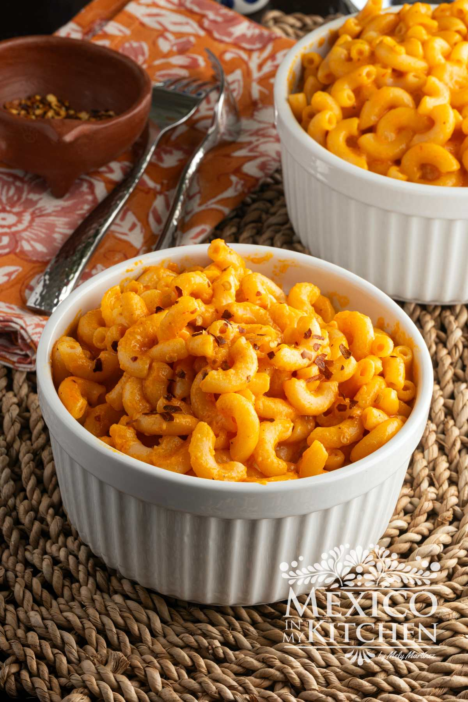

Back to Home
Macaroni and Cheese
Macaroni and cheese, colloquially known as mac and cheese, is the ultimate comfort food that bridges the gap between simple home cooking and gourmet indulgence. At its core, the dish consists of tender, al dente pasta—most traditionally elbow macaroni—enrobed in a rich, velvety cheese sauce typically built from a classic French béchamel base. While its centuries-old European origins date back to medieval cookbooks, it has evolved into a beloved global staple that varies drastically by region and preparation style. Some prefer the nostalgic convenience of quick stovetop varieties or boxed mixes, while others swear by a traditionally baked Southern style casserole that layers dynamic melting cheeses like sharp Cheddar, Gruyère, and Mozzarella beneath a golden, bubbling, cracker or breadcrumb crust. Highly customizable and endlessly adaptable, mac and cheese can serve as a humble weeknight dinner or be elevated into an upscale restaurant side dish infused with luxury ingredients like truffle oil, lobster, or smoked meats.
Recipe

Ingredients:
- 1 (16 ounce) package elbow macaroni
- 1 rotisserie-roasted chicken
- 6 tablespoons butter
- 6 tablespoons all-purpose flour
- 3 cups milk
- 1 pinch ground black pepper
- 2 cups shredded Cheddar cheese
- 2 cups shredded Monterey Jack cheese
- ½ cup hot sauce to taste
- ½ cup crumbled gorgonzola cheese
Instructions:
- Bring a large pot of lightly salted water to a boil. Cook macaroni in the boiling water, stirring occasionally until tender yet firm to the bite, about 8 minutes. Drain.
- Cut wings and legs off rotisserie chicken. Remove skin and bones from wings and legs; chop or shred dark meat into bite-sized pieces.
- Melt butter in a large Dutch oven over medium heat. Gradually whisk in flour until a thick paste forms. Cook until golden, about 1 minute.
- Pour in milk, whisking constantly, until thickened and bubbling, about 5 minutes. Continue to cook and stir until sauce is smooth, about 1 minute more. Reduce heat and season with pepper.
- Stir Cheddar and Monterey Jack into the sauce until melted and combined.
- Stir in hot sauce to the desired level of spiciness.
- Add Gorgonzola, chicken, and macaroni; mix well to combine.
- Serve hot and enjoy!
See more about the original recipe here